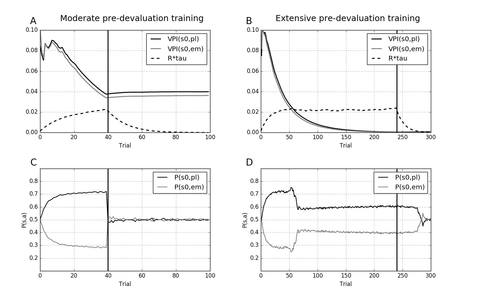

The models for the paper: Keramati M, Dezfouli A, Piray P (2011) Speed/accuracy trade-off between the habitual and the goal-directed processes. PLoS Comput Biol 7:e1002055 were recreated in the paper: Viejo G, Girard B, Khamassi M (2016) [Re] Speed/accuracy trade-off between the habitual and the goal-directed processes ReScience 2(1):1-5 in python (see the README.md in the code folder for installation and running instructions) available at this github link: https://github.com/ReScience-Archives/Viejo-Girard-Khamassi-2016 Executing "python run.py" in about 10 minutes on a 2012 macbook pro reproduced the results of Figure 3 A, B, G, H in a qualitative (all that Viejo et al. 2016 claimed) manner: 